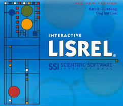

________________________________________________________________________________________________________________________________________________________________________
LISREL 8.8 FREE DOWNLOAD

System Requirements For LISREL 8.8
Before you start LISREL 8.8 free download, make sure your PC meets minimum
system requirements.
- Operating System: Windows
7/8/8.1/10
- Memory (RAM): 1 GB of RAM
required.
- Hard Disk Space: 100 MB of free
space required.
- Processor: Intel Pentium 4 or
later.
LISREL 8.8 Free Download
Click on below button to start LISREL 8.8 Free Download. This is complete
offline installer and standalone setup for LISREL 8.8. This would be
compatible with both 32 bit and 64 bit windows.
**********************************************************************************************************
**********************************************************************************************************
If The Download Links Are Not
Working Send Email To Us On:
yashkayastha44@gmail.com
Visit Our Youtube Channel :
www.youtube.com\techfi
**********************************************************************************************************
LISREL 8.8 Technical Setup Details
- Software Full Name: LISREL
8.8
- Setup File Name:
LISREL_8.80.zip
- Full Setup Size: 36 MB
- Setup Type: Offline Installer
/ Full Standalone Setup
- Compatibility Architecture:
32 Bit (x86) / 64 Bit (x64)
- Latest Version Release Added
On: 20th Aug 2019
- Developers: LISREL
Features of LISREL 8.8
Below are some noticeable features which you’ll experience after LISREL 8.8
free download.
- Can also be used for
structural equation modeling.
- Includes various other
statistical applications like PRELIS, MULTILEV, SURVEYGLIM and
MAPGLIM.
- PRELIS is the application for
the data manipulation, data transformation, computing moment
matrices, linear regression, logistic regression and ML and MINRES
exploratory factor analysis.
- MULTILEV is the application
which fits the multilevel linear as well as nonlinear models to
multilevel data from random and complex survey designs.
- SURVEYGLIM is the statistical
application that fits Generalized Linear Models to data from simple
random and complex survey designs.
An impressive application which is used for performing the statistical
analysis and calculation factor analysis.